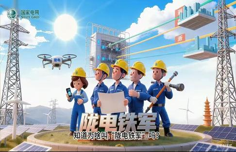
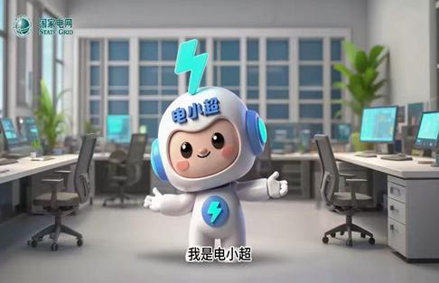
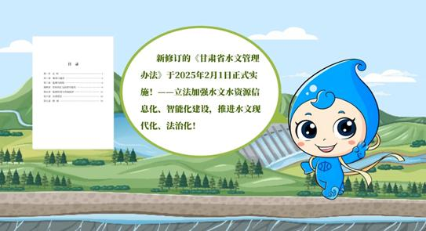

AI动画
国企AI宣传片
AI辅助宣传视频，被国家电网与甘肃水利正式采纳使用。
AI辅助宣传视频，被国家电网与甘肃水利正式采纳使用。
两个被国有企业正式采纳使用的宣传视频项目。第一个为国家电网甘肃分公司的安全宣传片，采用AI生成动画序列和IP角色动画与实景镜头合成。第二个为甘肃省水利厅的科普视频，运用AI动态图形和图标素材与实景融合。两个项目均使用豆包和即梦工具进行AI内容生成。
每个视频遵循四阶段流程：（1）前期制作——脚本开发与AI故事板生成；（2）素材创作——使用豆包和即梦生成动画序列、图标元素和IP角色动画；（3）制作——实景拍摄与AI素材整合；（4）后期制作——剪辑、合成、调色与最终交付。水利厅视频还采用了MG动态图形进行科普内容呈现。



两部视频均获各自单位正式审批采用。国家电网甘肃分公司的视频用于企业品牌宣传与安全意识传播，甘肃水利厅视频用于公众科普与机构宣传。本项目展示了AI视频工具在国有企事业单位专业媒体制作中的成功应用。
展示部分作品